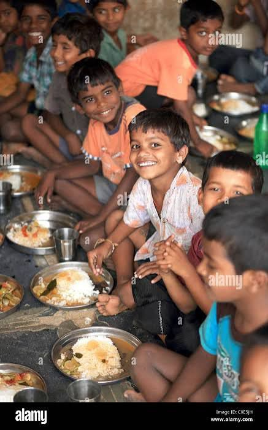
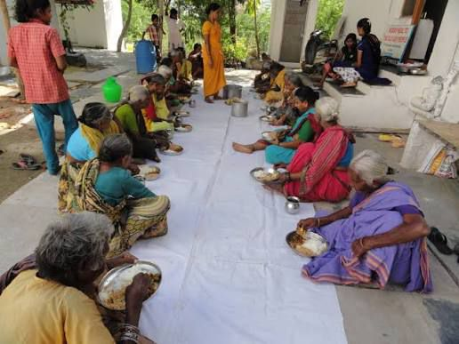

Nourishing Lives, Sustaining the Planet
Together, we connect surplus food with those in need — building a world without hunger or waste.
🌎 Live Impact
🥗 Food Saved: 0 kg
🔥 Calories Saved: 0 kcal
🌿 Carbon Reduced: 0 kg CO₂

Share More, Waste Less
Encourages people to donate and minimize food waste.
Every Meal Matters
Highlights the impact of each contribution.

From Waste to Wonder
Shows the transformation from discarded food to meaningful help.